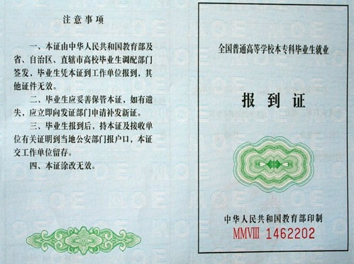

应届毕业生的户口，档案到底有多大的用处？不看后悔死你！要回去拿毕业证、报到证、派遣证的同学一定要看看啦！希望你能保存下来留着好。

大学毕业后的一年最为关键，这一年是对其人生的基本规划最为重要的一年，原因涉及三项：《就业协议书》、《报到证》（派遣证）、国家干部身份。
近年来，在紧张的就业过程中，很多高校毕业生在刚刚毕业的一两年内，就丢了自己的国家干部身份、人事档案、户口。这里先说说干部身份对于毕业生而言，有些什么样的作用，在我国，无论各行各业都会有职称评定，而且相信任何单位都希望有那些有职称的人来工作，而且，就算你工作的单位没有职称评定一说，那想你如果是高级工程师你拿的钱也绝对比别人多。而什么人能评定职称呢？有干部身份的人。所以从此看出，就算你不当官，你只挣钱，那干部身份对你来说还是有用的。在这里，我想简单的说一说我目前所知道的关于这方面的一些问题，相信肯定有很多不全面的地方，但至少相信可以帮助到高校毕业生。
（一）为什么毕业前要签《就业协议书》呢？很多毕业生朋友，都认为《就业协议书》签订，就是为了学校方便统计就业率的。但其实最重要的一个作用是学校办理该毕业生报到、接转行政、档案转出、户口关系的依据。
（二）如果说到就业协议，那么必需提到的就是《报到证》与国家干部身份。就业协议作为国家统计大学生就业率的一个根据，同时也是学校报到证发放的一个证明。只有毕业生签署了就业协议，拿回学校，学校才会在该毕业生毕业后将报到证发给你，而你拿着报到证到你工作的单位报道，就此开始计算工龄，而你也就拥有了干部身份。
（三）《报到证》：
《报到证》分上下两联（内容相同），上联（蓝色）由校就业指导中心寄发给毕业生，下联（白色）则放入学生档案内（人事档案属国家机密，不允许个人持有。如果你的用人单位拥有档案管理资格那么你的档案就放在单位；如果没有，那你的档案放在人才市场类的档案保存处。若你没签就业协议书，那你的档案就直接打回原籍）。而《报到证》则交由你手自行保管。在这里必须要重点说的是，很多人在毕业后没多久就把《报到证》丢了，而当若干年后单位希望将你提干要求出示《报到证》时，很多就没有了，而只能再跑回某地去重新开证明，这时的证明可就没那么好开了，所以还是劝毕业生保管好《报到证》。
（四）国家干部身份：
在中国社会体系中，公民分三中身份：农民、工人、干部。农民归农业部管理，工人归劳动局管理，而干部归人事局管理。大学生属于国家培养的专业人才，属于国家干部身份。而很多人却从毕业后就莫名其妙的丢了自己的干部身份。当然也有很多是根本不在乎自己的干部身份。认为有就有，没有就没有，没有的话我至少是四年大学毕业学士学位。其实你错了。如果你没有留住你的干部身份，可以说你的大学就是白念，而你只是个有学士学位的工人，根本没有改变你自己的身份。国家干部身份靠什么来？靠就业协议，靠《报到证》。《报到证》就是你大学生干部身份的证明，假如某天你被提干时，这个就是你可以被提干的证明，因为你是干部身份。否则你就不能被提，因为你是工人。也许很多人说：我不会被提干，那我要干部身份干嘛，我就想挣钱。
（五）那么我现在要说的就是职称评定了。其中也涉及到关键一年的具体事宜。
毕业生持《报到证》到单位上岗后，必须要经过一年的见习期（国家规定）。见习期满后，本人必须记得要签《毕业生见习期考核鉴定表》，这是你转正的鉴定表（从此你就拿正常工资了），说明你已经是一个合格的人才了（见习期需要在同一单位完成，也就是你的就业协议、报到证以及你的转正证明表，这三个上面盖的要是同一单位的章，否则视为无效）。紧接着要记得填写《国家统一分配大中专院校毕业生专业技术职务任职资格认定表》，也就是初级职称评定表（这些事要你自己留心，没有人会提醒你去做的，表要到人事部网站下载）。具体可评定的职称可以到人事部网站上查询（职称最好和自己学的专业有联系，否则到中高级评定时比较难）。现在我国职称评定这块要通过考试（除艺术、工艺美术、体育教练员及广播电视播音4个系列外，申报其他初级系列都需要通过考试才能获得初级专业技术资格。考试采用闭卷笔答方式，实行统一大纲、统一命题、统一组织。申报人员参加杭州市初级专业技术资格考试成绩合格，即可取得《杭州市专业技术资格证书》），以考试来决定你是否能评上职称。当然有些职称评定也不排除某些单位内部的人为原因。在你初级职称评完四年后，也就是你工作的第五年，你可以申请评定中级职称。再五年后，也就是工作第十年，评定高级职称（具体可上网查）。这样你一辈子的职称就基本评定完了，所以有些幸运的人10年就可以当上“高级工程师”。在我国，无论各行各业都会有职称评定，而且相信任何单位都希望有那些有职称的人来工作，而且，就算你工作的单位没有职称评定一说，那想你如果是高级工程师，你拿的钱也绝对比别人多。而什么人能评定职称呢？有干部身份的人。所以从此看出，就算你不当官，你只挣钱，那干部身份对你来说还是有用的。《就业协议》的签署是没有限制的，与任何公司或单位签都可以，不一定要国企或事业单位，否则每年那么多大学生就业，还不80%都要丢了干部身份。但要保证一点，就算是三个人的小公司也能签，但不要在一年内倒闭，否则你就没有人给你签转正了，切记切记。又有人说了，我想考研，我明年要考，我就不签三方了（其它情况也一样），随便找个活干干，挣点钱完了。那你就大错特错了。记住，不论任何时候，别放弃你的身份！如果你要考研，那么你属于在职考研一类，我们举例说一下。假如你考上了：你6月大学毕业，7月到单位报到。第二年7月，你转正，初级职称评定。研究生9月入学。当你研究生入学时，哥们已经是有身份的人了，3年研究生读完，哥们出来直接拿正常工资了（进私企），没有见习期一说了（研究生毕业也有3个月的见习期）。如果你进国企或事业单位，那么研究生3年算工龄（我不知道私企是不是，但国企或事业单位绝对是），你出来就可以评中级职称了，哥们又赚了一大笔。所以你说你该不该保你的干部身份？假如你没考上：没考上更简单，直接继续工作，回头等着评中级，没差什么。很多人总是怕麻烦，其实一切就是这么简单，如果你重视了，那么也许我的话会改变你的一生，如果你没重视，那么就当给我捧场，也谢谢你。不过要记住一句话，别因2009年就业压力大，而错失本该属于高校毕业生的国家干部身份，谨记！
（六）户口
就从户口说起吧，这方面都是比较根本的东西。户口是中国特有的一种户籍制度，如果在香港，户口一般指的是银行账户。中国政府依靠户口来统计中国的人口方面的数据，中国人口信息网上面那两个人口时钟就是根据户口来统计出来的。所以说，在中国，户口就是你最本质的证明。没有户口，就是“黑户”，将面临着种种麻烦，比如没法办理身份证（于是需要身份证的事情都没法做）没办法登记结婚，没办法领取社会补助，没办法读书上学，甚至面临着“偷渡”的嫌疑。其实“黑户”很常见，我工作一个月就见到了不下十个“黑户”，而且每一位都拥有至少是本科的文凭，可以说是知识分子。他们成为黑户的原因很简单，就是毕业以后“三不管”，户籍档案关系“任逍遥”，等到用的时候发现，自己竟然莫名其妙变成“黑户”了。又得花钱找人托关系重新办理，费钱又费时间，麻烦至极。所以大家一定要时常关注自己的户口，别丢了，受那冤枉罪。在中国，尤其是农村生源的孩子们，从小受的教育就是从出农村，向城市发展。打工是一条路，可惜打工何年何月才是出头之日啊；上学可以说是一条捷径，虽然这路也不是那么一帆风顺，总比打工舒服的多了。一般考上大学，就兴冲冲的回家领了户口迁移证，从家里的户口簿里拿走了自己的户口页，等到九月秋初，开学报到的时候将这些材料全部上交，就暂时性的成为了学校所在城市的一员（当然也有部分同学没有迁户口）。总之，大家户口迁出来的过程基本就是这个样子了。
其实毕业以后户口这东西也有一些道道。一般来讲，毕业生户口有五种去向：1、工作单位有户籍管理的条件（比如政府部门、高等学校）；2、就业地的人才交流中心；3、代理托管挂靠；4、未曾办理，一年后学校给予打回原籍；5、任逍遥，不知所终。
工作单位可以接管户口那最好，当然也要自己主动去办理这方面的手续，在现在这个冷漠的社会，除了父母兄弟朋友谁会管你的事情啊，所以别指望有人提醒你该怎么做，重要的是自己主动去问，去做。当然，大多数人还是无法在这种单位就业的，因为这种单位不是政府部门，就是国有企业，再者就是比较大型的企业。工作单位不能接管户口的时候，按照往常来说，大多数同学都会选择放到当地的人才交流中心，因为这是官方的说法。但是有个限制条件，人才交流中心的集体户口是属于临时户口，有两年的限期，毕业超过两年就不能继续托管了。而且户口跟档案是一体的，不能单独提出来。还有就是放到代理托管挂靠户口。我不知道别的公司是怎么样的，我们公司的收费是跟人才市场的一样的，这是物价局定的价格。但是放到我们公司有诸多好处。首先，我们公司的集体户口是青岛市或济南市常住户口，享受与青岛或济南市民同等待遇，比如买限价房什么的；其次，这个户口没有限期，是永久性的；再次，我们可以户档分离，户口档案可以分开提取，方便使用；最后，我们有计划生育办公司，可以进行户口夫妻投靠、子女投靠、父母投靠。你一个人拥有这个户口，全家人都可以投靠。有的人没有办理任何手续，户口打回原籍，如果遇上不负责任的管理员，恐怕就成了“黑户”。
（七）档案
很多人终生都见不到自己的档案，按照规定，个人是不能接触自己的档案的，档案的发送必须使用国家“机要”文件发送方式，属于国家秘密。所以说，档案是一件很严肃的东西。它是一个人生平的写照，读书的情况，工作的情况，党组织关系的一些情况都会在档案里以文件的形式保存，直到去世。-
档案原则上来讲分为三种：学籍档案、人事档案和工人档案。学籍档案记录一个人的读书生涯，记载着他何年何月在哪里读书，受过何等处分何等表扬，一些测评表格、成绩单等归教育局管理。人事档案则是在学籍档案中加入了派遣证、履历表、转正定级材料、婚姻变更材料、出国材料、劳动合同等，归人事局管理。工人档案则是指没有经过转正定级，没有获得干部身份的工人，归劳动局管理。
目前还在校读书，包括像我这样的正在实习，但还未毕业的学生的档案，全部是学籍档案（这期间档案在学校）；毕业生毕业后，在其学籍档案中放入该毕业生的报道证，然后由学校将档案转交毕业生就业单位的人事部门或委托的人才交流机构，这份档案才转成人事档案（这期间档案在工作单位或者人才交流中心或者挂靠在代理托管机构）；如果毕业生毕业后未办理相关手续，那么在一年派遣期后（211工程学校是两年），其学籍档案过期，将被打回原籍，进入劳动局，转变为工人档案（这期间档案在劳动局）。 如果你的档案不行由人事局转为劳动局管理，那么很遗憾的告诉你，你失去了你这么多年读书得到的唯一社会凭证——干部身份。有人说我有毕业证，证明我受过高等教育，可是你没有干部身份，你就是一个受过高等教育的工人，即使退休了，你的退休金也比有干部身份的人的要少很多很多。关于干部身份，我下面会详细得讲。
（八）干部身份
在告诉大家干部身份是什么东西之前，我首先要阐明一下，干部身份如果失去了，无法补办，保质期一过，永久丢失。在中国社会体系中，公民分三中身份：农民、工人、干部。农民归农业局管理，工人归劳动局管理，干部归人事局管理。通过向劳动部门申请办理招工（就业）手续后具备工人身份，通过人事组织部门办理吸收、录用干部手续后具备干部身份，国家统一招收的全日制普通高校毕业生执行一年见习期考核合格办理转正定级手续后也具备干部身份。（注：如果两年择业期内没有办理相关手续，指标自动作废）注：大中专毕业生必须办理将“学籍档案”转变成“人事档案”后才有资格办理转正定级手续 国家规定，大中专毕业生毕业（以报到证人事部门签署日期为准）一年后，即可由所在单位人事部门或委托的人才交流机构批准转正定级；本科毕业生毕业工作一年（以报到日期计）、大中专毕业生毕业工作满三年可申报初级职称，由所在单位人事部门或委托的人才交流机构办理。转正定级之后，就确定了干部身份。
（九）干部身份的作用：
1、 国家机关录用公务员、进入事业单位的基本条件。公务员政审材料有一条明确规定要有干部身份（应届毕业生考公务员的除外）。
2、 单位之间，城市之间人才流动的必备条件之一。比如北京现在的落户政策基本就是人才引进，必要条件之一就是要有干部身份。只有有干部身份，才能说是干部调动。
3、 拥有干部身份才能够评职称。在我国，无论各行各业都会有职称评定，而且相信任何单位都希望有那些有职称的人来工作，就算你工作的单位没有职称评定一说，那想你如果是高级工程师，你拿的钱也绝对比别人多，因为这是国家规定，国家规定拥有职称的人的基本工资，比如一个高级工程师的基本工资不得低于年薪5W（举例，不代表国家规定）。
4、 提干的基本材料。就是说如果你要被提升干部，就必须拥有干部身份。
5、 计算干部工龄的起始点，工龄从拥有干部身份开始计算。（工龄关系着你的职称评定、社会保险等）
6、拥有干部身份养老保险拿的钱数多(干部100%，工人60%-80%)。有人说，我不考公务员，不想进事业单位，我就挣钱行了吧。这又牵扯到职称问题了，一个拥有职称的人，哪怕是个低级职称，他的工资比同水平没有职称的人的工资水平就高一个级别；有人说，我暂时想考研，等研究生毕业后再想工作的事。假如你今年7月份毕业，你在6月份跟一个代理公司（或者找关系，你爸的朋友的公司什么的）签订了三方协议，档案被发到这家代理公司。等到九月份研究生入学的时候，需要档案，就去让这家公司发送你的档案到学校（你算作是在职考研，与应届生考研没什么区别）。一年后，找签三方的那个公司给做转正定级，确定干部身份。三年后你毕业，实际已经拥有2年的工龄了。工龄这个东西很重要，首先必须拥有干部身份（工作一年）才能评定初级职称，工龄4年（工作五年），可以评中级职称，工龄9年（工作10年），可以评高级职称。至于那些破例评定的，则需要获得什么国家级的科研奖什么的，咱么一般人是没有办法的。今后无论工作如何变动，你的人事档案不能脱离人事厅（局）以及所属的人才中心等干部档案管理系统。一旦转入劳动局或所属的劳动力市场以及职介等机构超过三个月不能及时转回的，将失去原有干部身份。
转正定级为干部是国企和事业单位的称呼。办理转正定级手续后就具备了国家干部身份，如果变动工作调入国有单位，转正定级将作为享受有关待遇的主要依据。转正定级在档案管理的意义上用处很大：不作转正定级，档案中就没有转正定级表，按档案不全处理。机关、事业单位和规范的大企业不收此档案，也就不能录用。大城市办理引进人才解决当地户口时也不收此档案，也就无法办理。一句话，反需要审查档案的，你都过不去。这有利于规范用人单位的人事管理，有利于办理对象的职业发展，同时也是确认办理对象的干部身份的必要手续。凡本科及以上（大专也算）学生毕业见习1年后需进行转正定级而成为干部。档案里面会装上转正定级表和干部登记表。比如你今年2010年6月份毕业,到明年2011年6月.这个期间属于见习期,见习期满需要做转正定级.只有做完转正定级以后档案才可以在人才市场上流动!否则以后你不管到哪个人才市场，理论上是不接收你的档案的!因为你的档案里缺少转正定级表!转正定级的期限是一年!所以在你毕业的时候就要赶紧找接收单位,一年以后叫单位给你做定级!并且这一年期间档案不可以提!否则就得改派了!你的见习期又得一年! ）
|